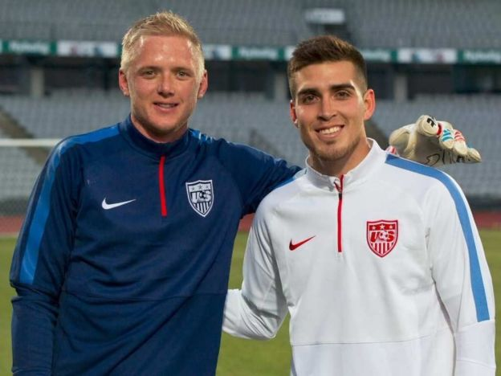

Convocatoria de EE.UU. para la copa oro
23/Junio/2015
CHICAGO, Estados Unidos, Jun. 23, 2015.- El técnico alemán Jurgen Klinsmann dio a conocer la lista de jugadores la selección de Estados Unidos que participará en la Copa Oro, en la que aparecen 14 jugadores que disputaron la Copa del Mundo Brasil 2014.
Destaca también la presencia del portero William Yarbrough y del defensa Ventura Alvarado, quienes militan en el futbol mexicano en las planteles del León y América, respectivamente.
El cuadro estadunidense sostendrá su último partido amistoso el próximo 3 de julio frente a su similar de Guatemala, en el LP Field en Nashville.
La escuadra de las Barras y las Estrellas está ubicada en el Grupo A, en el que se verá las caras ante Panamá, Haití y Honduras, los días 7, 10 y 13 de julio.
Lista de convocados:
Porteros: Brad Guzan (Aston Villa), Nick Rimando (Real Salt Lake), William Yarbrough (Club Leon)
Defensas: Ventura Alvarado (Club America), John Brooks (Hertha Berlin), Timmy Chandler (Eintracht Frankfurt), Brad Evans (Seattle Sounders FC), Omar Gonzalez (LA Galaxy), Fabian Johnson (Borussia Mönchengladbach), Tim Ream (Bolton Wanderers)
Mediocampistas:Kyle Beckerman (Real Salt Lake), Alejandro Bedoya (Nantes/), Michael Bradley (Toronto FC/2007), Brad Davis (Houston Dynamo/2005), Mix Diskerud (New York City FC), Alfredo Morales (Ingolstadt), DeAndre Yedlin (Tottenham Hotspur), Gyasi Zardes (LA Galaxy), Graham Zusi (Sporting Kansas City)
Delanteros: Jozy Altidore (Toronto FC), Clint Dempsey (Seattle Sounders FC), Aron Johannsson (AZ Alkmaar), Chris Wondolowski (San Jose Earthquakes).